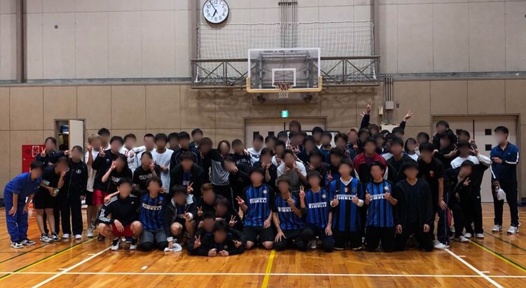
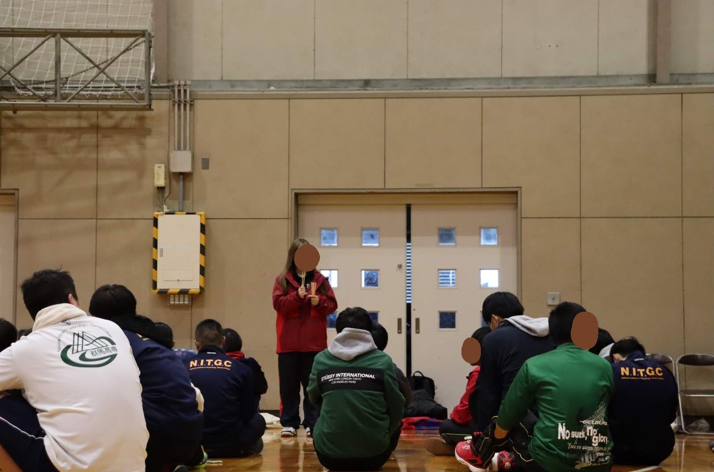
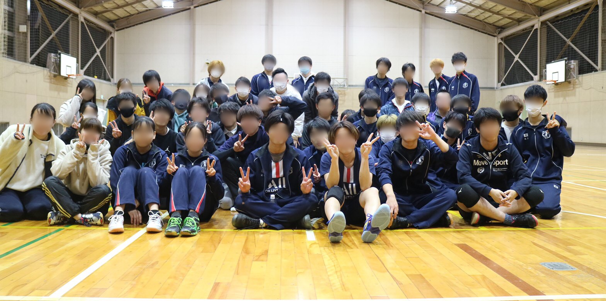

背景
群馬高専の学校行事である球技大会ではいくつかの球技が行われ、そのうちの一つにバレーボールがあります。全５学年各クラスがトーナメント形式でバレーボールを競技し、とても盛り上がります。また、群馬高専のバレー部には、夏に開催される高専大会が一度あるのみでそのほかの大会はありません。実際に冬になるとイベントがないため、モチベーションの低下などが起きていました。そこで、バレー部員以外も有志で参加できるクラス対抗のバレーボール大会を冬に開催することを考えました。
大会概要
大会の実行目標を「怪我無く、バレーボールを楽しむ」と定め、バレーボールを行いました。参加チーム数によって試合形式をトーナメントやグループ総当たりなど柔軟に対応できるよう計画しました。開催時期が冬であり、バレー部員でない一般参加の学生が多くを占めていたため、準備運動や競技上の注意などをプログラムに取り入れました。
開催過程
- 顧問の先生に大会開催の承諾をもらうため説明
- 周知・参加チーム募集
- 開催
過去の大会の様子
2018年度 第一回大会
開会式で司会をしている様子

2019年度 第二回大会
